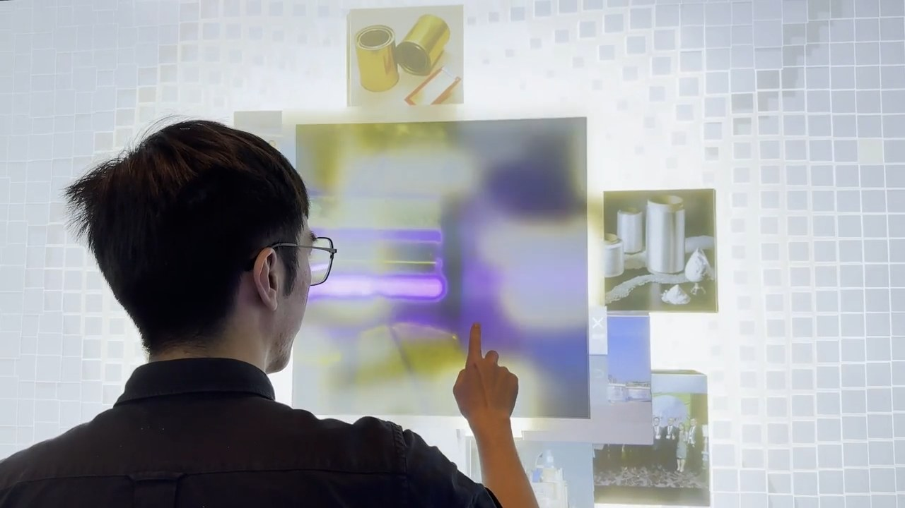
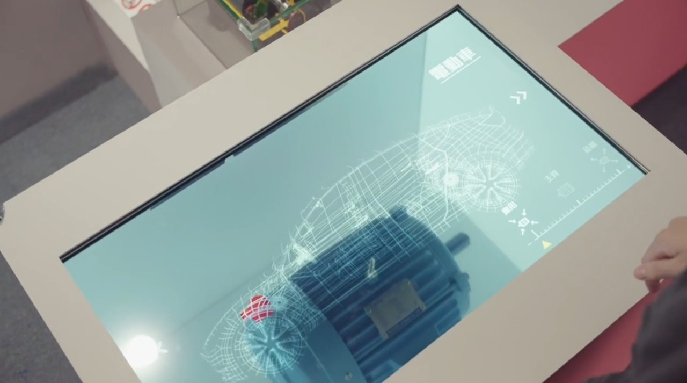
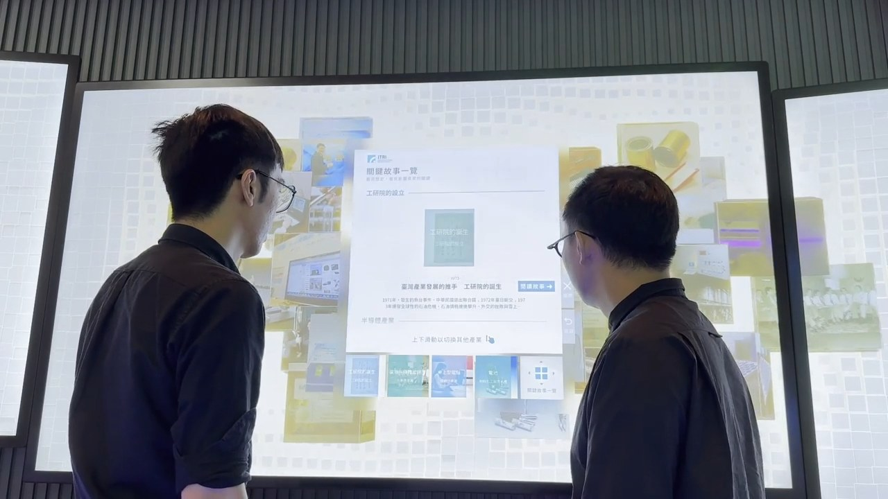
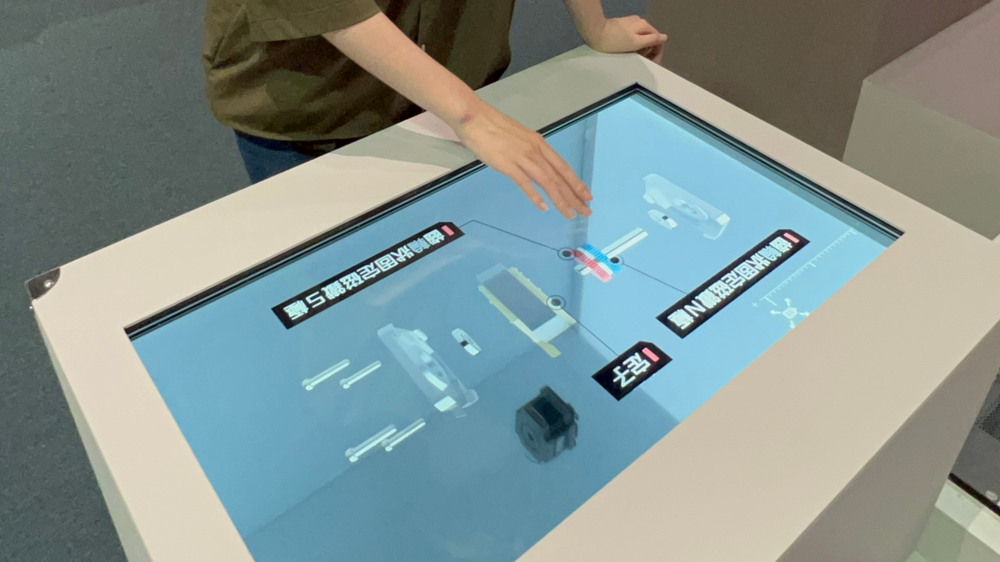
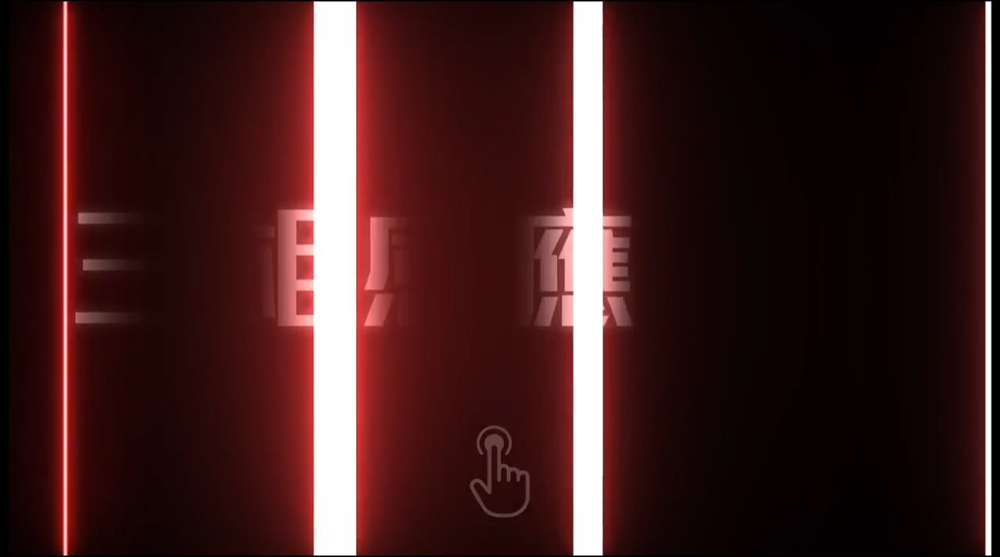
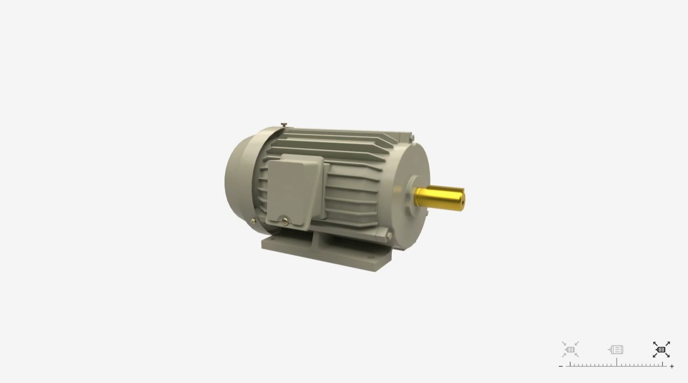

Interaction design · 2021–2023
Interactive
Exhibits
Digital installations that help visitors explore physical exhibits through touch, gesture, and on-screen content.


Cube N
Industrial Technology Research Institute · February–June 2023
Digital interactive wall · Product Designer
Cube N is an interactive digital wall that combines touch screens, sensing technology, and generative art. Its visual arrangements change as visitors interact with it.
Visitors can tap an image that interests them to open the story behind it. The interface connects stories from different eras and industries, helping visitors explore how they relate to one another.


Exploration of Motor
National Science and Technology Museum · June–December 2021
Transparent screen display · Product Designer
This installation places a physical motor model behind a transparent screen. Information on the screen overlays the model, introducing the motor’s structure and its uses in everyday life.
Visitors slide their fingers across the screen to explore the content. With a pinch-to-zoom gesture, visitors can take the motor apart on screen and put it back together, seeing how its internal parts relate to mechanisms in everyday devices.

-p-1600.png)

